Applying a Snap Mask to a Layer
The Snap masking tool provides instant visual feedback by snapping an editable curve to an object's boundary even if it has vague or low contrast edges. This is made possible by utilizing unique graph-cutting and segmentation algorithms.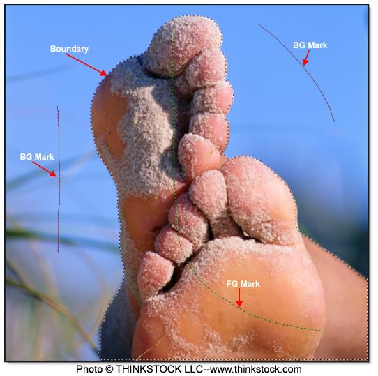
1 Select a filter and preset that changes the image in an obvious way.
2 Click the Add Mask icon in the Layers window and choose Snap.
Once Snap is selected, the effect of the filter in the Viewer can no longer be seen until a mask is created.
3 Define the area to be isolated by drawing a foreground line with the left mouse button.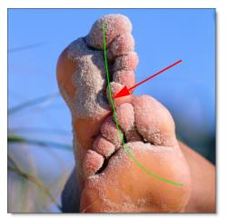
The Mark Foreground icon is selected by default when you apply a Snap mask and that is why you can just start drawing with the left mouse button.
4 Define background areas by drawing lines with the right mouse button.
5 Alternatively, you could select the Mark Background icon and draw with the left mouse button. 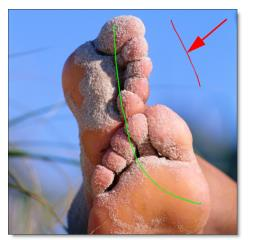
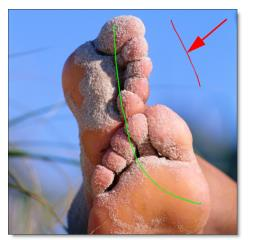
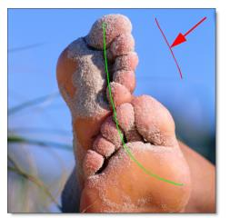As soon as the first background line is drawn, Snap calculates a boundary curve that is displayed as a black and white dashed line around the object.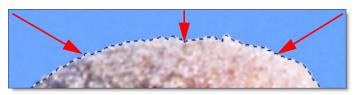
6 Draw additional foreground and background lines as needed until the object that you’d like to isolate is roughly surrounded by a boundary.
Where the boundary doesn’t correctly follow the edge of your object, refine the boundary by using either the Edit Points or Override Edge icons in the Toolbar. When either of these tools is selected, the boundary created in the object marking step is converted into editable polygons and you will see a noticeable refinement in the boundary.
7 Click the Edit Points icon in the Toolbar and drag a point to adjust the shape of the polygon. 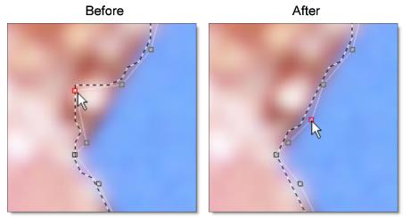
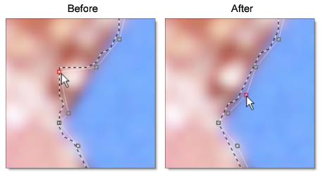
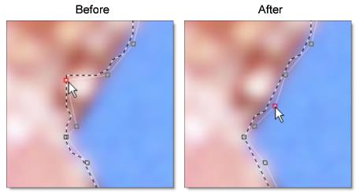and / or
8 Click the Override Edge icon in the Toolbar and draw a mark along the edge of your object where the boundary doesn’t correctly follow the edge. 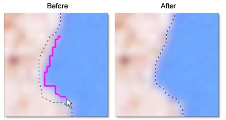
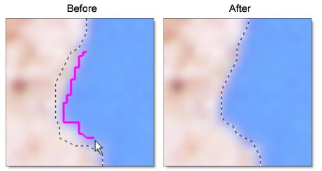
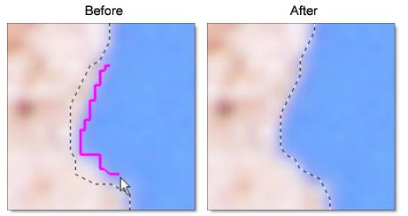9 When happy with the boundary you have created, click the Convert Curve to a Path icon in the Toolbar to apply it to the layer and convert it to an editable path.
A slider pops up to control the amount of points to be included in the path.
10 Drag the slider to reduce the number of path points or just click it to accept the current setting.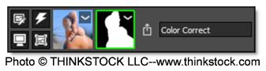
By default, Edit Points is selected after the path is created so that you can view and edit the points.
11 To create a new boundary, select the Mark Foreground icon and repeat the above steps.
When boundaries overlap, a hole in the mask is created.
See Snap Mask for more information.